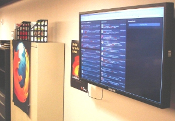
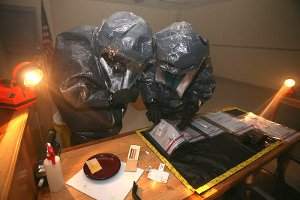
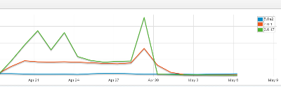
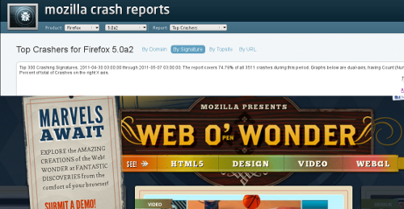

Inhalt
CSI:Mozilla
Folgende Folien sind in dieser Präsentation enthalten:
CSI:Mozilla - Den Bugs auf der Spur
Robert Kaiser,
"KaiRo" <kairo@kairo.at>
Mozilla-Manager
Mozilla-Manager
Folies: http://kairo.mozdev.org/slides/linuxwochen2011/
- Erstellt für einen Vortrag auf den Linuxwochen 2011 in Wien.
- Geschrieben in HTML 5 mit CSS 3 und JavaScript.
- Navigation mit Links auf allen Folien, mit Accesskeys (e.g. "n"/Alt+Shift+N for "next") oder vor/zurück-Pfeilasten
- Inhalt
 05/2011 Robert Kaiser
05/2011 Robert Kaiser
Mozilla
- Gemeinnützige Stiftung
- Innovation, Offenheit und Auswahl im Web
- Firefox, Thunderbird, Drumbeat, Bugzilla, SeaMonkey, XULRunner, ...
- Riesige Community, ~400 Mitarbeiter als Kern
Firefox 4

- März 2011 - auch für Android und N900!
- Große Anzahl an Neuerungen
- Manche Funktionen fast 1 Jahr vorher fertig
- Letztes "großes" Release
- In Zukunft schnelle, kleine Schritte
Firefox 4: Funktionen
- Neue einfachere Oberfläche (anpassbar!)
- Neue Web-Funktionen - webofwonder.org - WebGL, WebM, Audio-API, CSS-Transformationen, IndexedDB, ...
- Geschwindigkeit (Start und Ausführung, Hardwarebeschleunigung)
- DNT, Sync, App-Tabs, Panorama, ...
- Neustart-freie Add-Ons
Neuer Prozess
- Kleine, schnelle Schritte, Versionsnummern immer weniger wichtig
- Neuer "Zug" alle 6 Wochen
- Nightly / Aurora / Beta / Release
- Derzeit 5 in Aurora, 6 in Nightly - 17./24. Mai: 5->Beta, 6->Aurora, 7->Nightly
- Automatische Updates

Firefox 5
- Juni 2011 (!)
- Derzeit "Aurora"
- Geschwindigkeit (Verbindungen, Seiten-Ausführung)
- CSS-Animationen, überarbeitete Rechtschreibprüfung, ...
- https://wiki.mozilla.org/Features/Release_Tracking#Firefox_5
Firefox 6
- August 2011
- Derzeit "Nightly"
- "Scratchpad" ("Schmierzettel"?), Firefox Share (F1)?, Automatische Silbentrennung
- Ab 24. Mai "Aurora" - was nicht korrekt funktioniert, wird gestrichen und kommt später
Firefox 7+

- Websockets, "Firefox Identity", usw.
- "IonMonkey" (Noch schelleres JavaScript)
- "Azure" (Besser beschleunigte Grafikfunktionen)
- "Electrolysis" (Prozesstrennung), usw.
- Auslieferung 12-18 Wochen nach Fertigstellung der Funktionen
"CSI:Mozilla"

- "CrashKill"-Team - Absturzanalyse
- "Autopsieberichte und Spurensicherung" von "toten" Firefox-Prozessen
- Finden von größeren Serien"fällen"
- Analyse von Zusammenhängen
- Zuständige Entwickler (intern/extern) zur Lösung bewegen
Absturz?

- Ungültiger Aufruf -> unsauberes Beenden eines Prozesses
- Nicht antwortendes Plugin ("Hang")
- Absturzmelder sammelt Daten ("Spurensicherung", "Autopsie")
- An Mozilla übermittelt, ev. mit Kommentar
- Dort aufbereitet, analysiert
Daten in Absturzberichten
- Produkt, Version, Build ID, System, Channel, ...
- Aufrufe im Stack ("Autopsie")
- Geladene Module, Erweiterungen, Kommentar, ... ("Spurensicherung")
Überblick

- Verwandte Abstürze -> "Signatur"
- "Topcrashers"
- Signifikante Anstiege
- Korrelationen
Demo

Wahlweise:
- Absturz-Analyse
oder
- Firefox-Funktionen
Aktiv werden
Danke für die Aufmerksamkeit!
Jetzt ist es an der Zeit, selbst aktiv zu werden:
- Firefox 4 installieren, wo möglich!
- Aurora testen! www.firefox.com/channel
- Absturzmeldungen senden!
- Mozilla unterstützen!